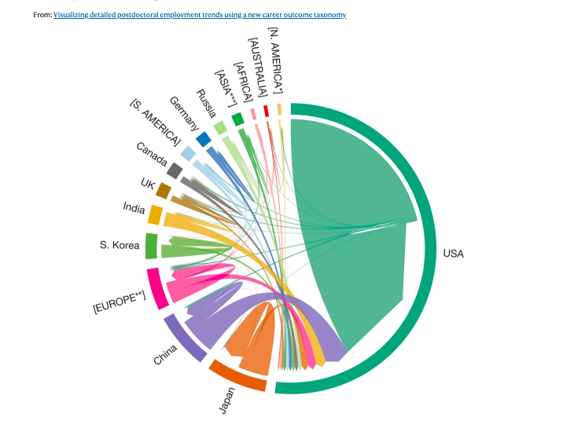

Thank you for considering participating in this research study on data visualization.
The articles and the project from which the data visualizations are taken are well-respected and recognized for their expertise in the social sciences and humanities.
Sources:
Visualization 1: Xu, H., Gilliam, R., Peddada, S. et al. Visualizing detailed postdoctoral employment trends using a new career outcome taxonomy. Nat Biotechnol 36, 197–202 (2018). https://doi.org/10.1038/nbt.4059
Visualization 2: Vargas Meza, X., Koyama, S. A social media network analysis of trypophobia communication. Sci Rep 12, 21163 (2022). https://doi.org/10.1038/s41598-022-25301-3
Visualization 3: Lee, T., Markowitz, E., Howe, P. et al. Predictors of public climate change awareness and risk perception around the world. Nature Clim Change 5, 1014–1020 (2015). https://doi.org/10.1038/nclimate2728
Visualization 4: Cousin, Ertharin, A.G. Kawamura, and Mark W. Rosegrant. "The Threat of Water Scarcity." In From Scarcity to Security: Managing Water for a Nutritious Food Future. Chicago Council on Global Affairs, 2019. Stable URL: http://www.jstor.com/stable/resrep21409.6
Visualization 5: http://www.poppyfield.org/
Visualization 6: Kim, S., Lim, HW. & Chung, SY. How South Korean Internet users experienced the impacts of the COVID-19 pandemic: discourse on Instagram. Humanit Soc Sci Commun 9, 75 (2022). https://doi.org/10.1057/s41599-022-01087-7


Page was created with Mobirise web theme